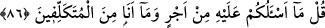

86. (Rasûlüm!) De ki: Buna karşılık ben sizden bir ücret istemiyorum. Ve ben
olduğundan başka türlü görünenlerden de değilim.
“(Rasûlüm!) Muhammed! Müşriklere “De ki: Buna” yâni benim size getirmiş
olduğum bu Kur’an’a ya da vahyi tebliğ ve peygamberlik görevimi îfâ etmeme
“karşılık” olarak “ben sizden” hiçbir dünyalık ve hiç “bir ücret istemiyorum.”
Aksine, size bütün bunları bir ücrete karşılık olmaksızın öğretiyorum. Çünkü hâlis bir
kulluğun (ubûdiyet) gereği odur ki yapılan iş mukâbilinde herhangi bir karşılık ve
teşekkür beklememelidir. Öyle ise bir mal alabilmek ümidiyle “darü’l-harb”de bir
kâfirin başını kopartan ya da esir eden veya ordu komutanına getiren biri bunu Allah
için değil, o mal için yapmıştır. Fâsid birtakım maksadlar gözetilerek yapılan bütün
işler de bu minvaldedir.
Yarın hakîkat huzûru ve meydanı ortaya çıkınca,
Ameli hakkıyla yapamadığın için mahçup yürürsün.
“Ve ben” bunca zamandır tanıdığınız gibi ehli olmadığı bir şeyi ehli imiş gibi
sâhiplenenlerden yâni “olduğundan başka türlü görünenlerden de değilim” ki
peygamberliği intihâl edeyim; yâni yalan yere peygamberlik iddiâsında bulunabileyim
ve şu Kur’an’ı kendiliğimden uydurabileyim! Diğer bir ifâdeyle, ben kendiliğinden
uydurup bir şey ortaya koyan ve sâhip olmadığı şeyi yapıyormuş gibi davranan
insanlardan değilim. Hâsılı, ben size kendi tercihimle kendim gelmiş değilim, aksine
size gönderilmiş durumdayım. Kendiliğinden bir şey söyleyen biri ise onu zorlukla ve
yapmacık olarak düzer. “Tekellüf” aslında aklen gerekli olmayan bir şeyi elde etmek
için birtakım zorluklara girmektir.
Tâcü’l-masâdir’de şöyle der: “Tekellüf”, bir şeyin sıkıntısını çekmek ve kendisinden
olmayan bir şeyi göstermektir. “Mütekellif” yâni tekellüf eden ise kendisini
ilgilendirmeyen bir şey (mâ-lâ-yânî) ile uğraşıp durandır.
el-Müfredât’ta ise şöyle der: Bir şey hakkında “tekellüf” etmek demek, insanın
yaparken bir meşakkate dûçâr olmanın yanı sıra bir külfet ızhar ederek yaptığı şeydir.
Târiflerde “külfet” kelimesi, meşakkatin adı hâline gelmiş; “tekellüf” de meşakkatle
veya yapmacık olarak ya da oradan buradan doldurarak yapılan şeye denir, olmuştur.
“Teklîf” de bu sebeple iki kısma ayrılır:
1- Övgüye lâyık teklif, insanın yapacağı fiil kendisi açısından kolay hâle gelip
hoşlanacağı bir kıvama gelme özelliği elde edebilmesi için peşinden koştuğu tekliftir.
Bu bakış açısıyla teklif, ibâdetlerin teklif edilip yüklenmesi anlamında kullanılmıştır.
2- Kötülenmiş teklif ise “ve ben olduğundan başka görünenlerden değilim” ifâdesi
ile kasdedilen tekliftir.
Hadis-i şeriflerde de “tekellüf” sahih olarak yasaklanmıştır. Hz. Peygamber (s.a.)